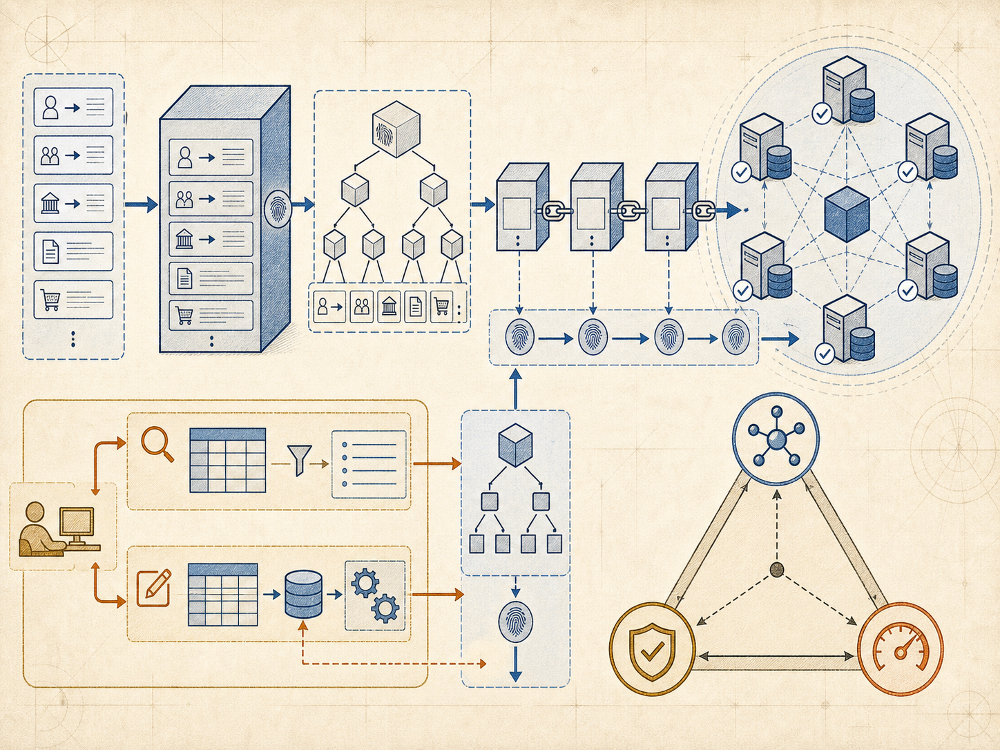
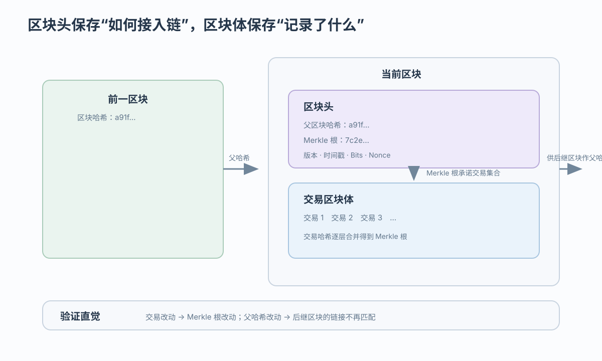
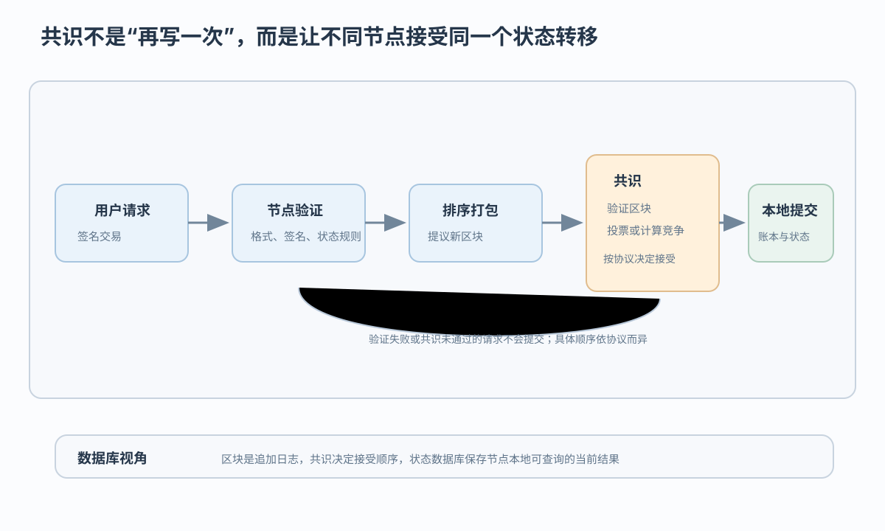

链式结构
父哈希连接区块历史，使已接受记录的改动留下可检测证据
区块链把链式记录、共识和状态数据库组合为分布式数据系统
 VER. 2608.3
Built with impress.js
VER. 2608.3
Built with impress.js
完成本节后，你应该能够
链式结构、分布式账本、共识和状态数据库承担不同职责

父哈希连接区块历史，使已接受记录的改动留下可检测证据
多个节点保存并验证共同接受的历史副本
节点按协议决定接受哪一段历史及其状态结果
节点执行账本记录后维护本地可查询的派生状态
区块头保存链接和协议证据，区块体保存交易；节点按协议验证区块

字段职责随协议而变；比特币式区块的核心字段包括 Version、父哈希、Merkle 根、Timestamp、Bits 和 Nonce
父哈希把本区块接到上一区块
承诺区块体中的交易集合；交易变化会传导到根
Version 标记规则版本；Timestamp 是协议约束下的时间信息
Bits 与 Nonce 服务比特币式工作量证明；不是所有区块链的通用字段
区块头字段依协议而定；节点按协议验证交易合法性
Merkle 根变化会传导到区块哈希
Merkle 根承诺的是本区块的交易集合；它不负责验证交易合法性，不等于共识、最终性或绝对不可篡改
后续区块的父哈希和已同步节点的副本可能暴露不一致
这提供改动可检测性并提高重写成本，不保证历史绝对不能改写；最终性和重组边界依协议而异
传播、副本和状态数据库承担不同职责；比特币式系统可见三类典型角色
节点发现邻居并传播交易或区块；网络传输本身不决定哪条历史被接受
全节点通常保存并验证较完整的账本数据，也维护本地状态
轻节点通常只保存区块头或依赖证明查询，具体能力依系统而异
典型流程包括验证、排序、执行和提交；具体顺序依协议而异

两者都协调节点接受同一历史，但参与条件、代价和最终性不同
| 方式 | 参与条件 | 达成接受的机制 | 主要代价与边界 |
|---|---|---|---|
| 工作量证明（PoW） | 开放节点；无需预先许可 | 竞争满足难度的计算结果，按协议选择历史 | 计算与能源开销；确认通常具有概率最终性 |
| PBFT 类投票 | 已知身份的许可节点 | 按协议达到法定多数后接受；可容忍部分拜占庭故障 | 通信与投票开销；故障假设和节点规模受限 |
区块链机制可以适配其他业务，比特币只是一个具体系统
链式记录、密码学链接、分布式网络、共识和可编程规则可以按业务重新组合
以数字货币为业务目标的具体系统；其区块字段、激励和共识安排是一个实例
区块链的准入模式和架构应按业务适配；比特币参数不能直接作为通用答案
是否适合区块链，取决于治理、数据真实性、延迟、删除修改和共识成本
| 场景特征 | 适合程度 | 原因 |
|---|---|---|
| 多方共同记账且缺少共同中心 | 可能适合 | 满足治理、接入和数据真实性条件时，可能减少重复对账 |
| 需要历史追溯 | 可能适合 | 链式证据支持追溯，但不自动保证现实输入真实 |
| 单一可信中心且只要求低延迟 | 未必适合 | 普通数据库可能更简单直接 |
| 极高频低延迟写入 | 谨慎 | 共识和广播有额外开销 |
| 需要删除或修改历史记录 | 谨慎 | 已接受的历史记录受删除、修改和隐私控制约束 |
预言机提供现实输入，但区块链只能保护已经写入并达成共识的记录的可追溯性，不能自动证明输入真实
链式结构记录历史，P2P 传播信息，共识决定接受哪条历史，状态数据库提供可查询状态
四个对象承担不同职责，区块链是它们的技术组合
父哈希连接历史，Merkle 根承诺交易集合；改动可检测不等于绝对不可改写
P2P 传播 → 验证与提议 → 共识接受 → 本地账本和状态更新
治理、真实性、延迟、删除修改和协议成本共同决定是否适合
区块链技术组合必须与业务治理、真实性、延迟和协议成本一起评估